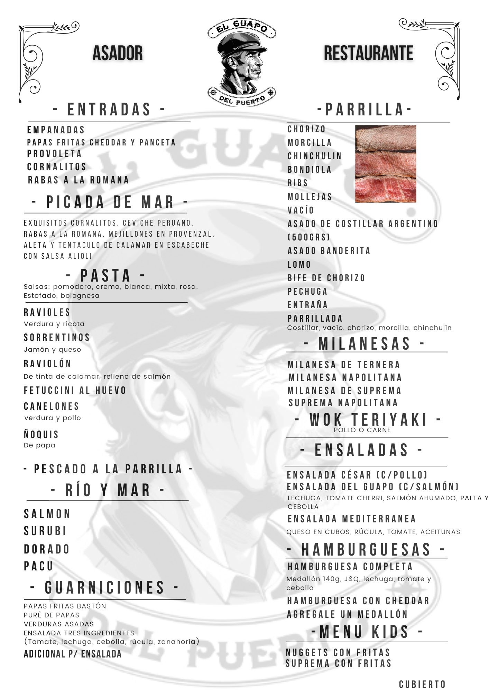
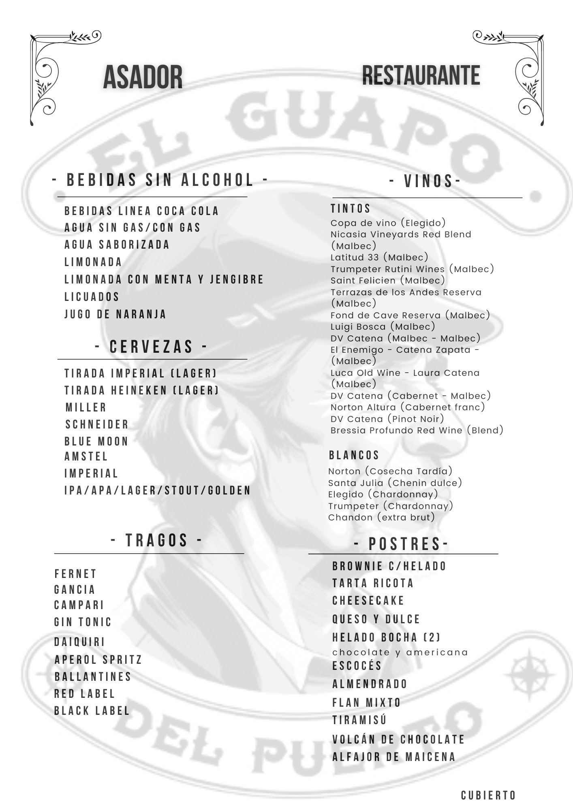
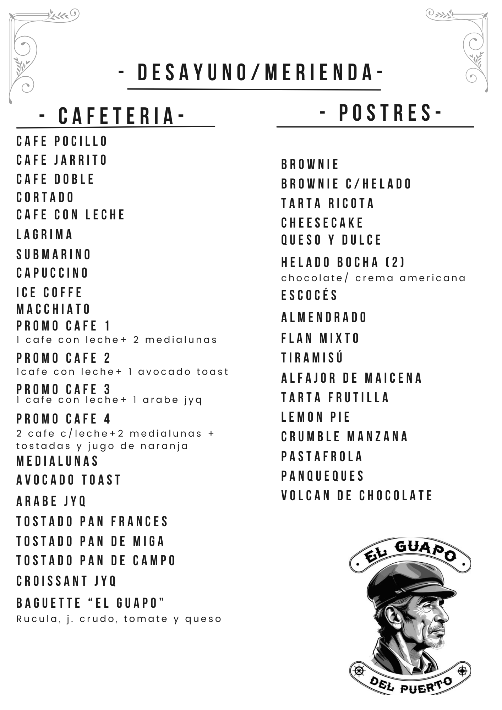

Asador & Restaurante con vista al río en el corazón de Tigre
SOBRE NOSOTROS
Una experiencia con sabor y vista al río
En el corazón del Puerto de Frutos, El Guapo del Puerto combina la tradición de la parrilla argentina con una vista inigualable al río.
Terraza, deck de madera, salones vidriados y ambientación cálida hacen de cada comida un momento único.
CARRUSEL DE FOTOS
NUESTRO MENÚ
ALMUERZOS


MERIENDAS & DESAYUNOS

NUESTROS CLIENTES
Lo que dicen nuestros clientes...
"El menú del día estaba buenísimo. Se comió rico y buenos precios. Con una cálida atención."
"Hermoso lugar. La comida excelente y el personal muy amable."
"Excelente lugar frente al río, con una gran vista. Los mozos muy atentos y amables, brindando un excelente servicio.
La comida estuvo espectacular, todo riquísimo."